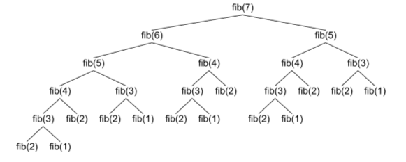

Efficient Recursion
The naïve version of the recursive Fibonacci function which you met in the last lesson was very inefficient. As the numbers get larger, it takes an increasingly large amount of time to generate each one. This is because for each number we find, we have to generate all of the Fibonacci numbers preceding it.

In Computer Science, we say that this implementation has an exponential, or O(2n) runtime performance; as n gets larger, we double the number of calculations at each step. That means that it could literally take years to calculate a Fibonacci number of even a moderate size using this function.
We can reduce those years to a fraction of a second by learning about wrappers and helpers. A wrapper is a non-recursive function that calls a recursive function. A helper is the recursive function that the wrapper calls. Let’s apply that to the Fibonacci sequence.
 This course content is offered under a
CC
Attribution Non-Commercial license. Content in this course
can be considered under this license unless otherwise noted.
This course content is offered under a
CC
Attribution Non-Commercial license. Content in this course
can be considered under this license unless otherwise noted.